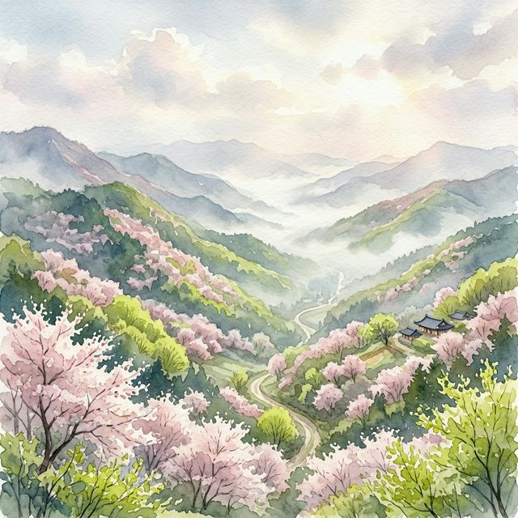
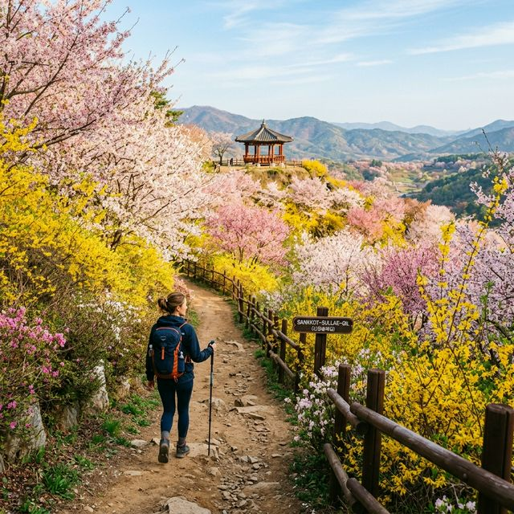

금산 보곡산골 산벚꽃 축제 2026 — 국내 최대 산벚꽃 군락지의 몽환적인 숲길 산책 가이드
충청남도 금산군의 깊은 골짜기에 위치한 2026 금산 보곡산골 산벚꽃 축제는 인위적인 화려함 대신 대자연이 스스로 빚어낸 소박하고도 몽환적인 아름다움을 선사합니다. 4월
11일부터 19일까지 펼쳐지는 이번 축제는 국내 최대 규모인 600만 평의 산벚꽃 군락지를 배경으로, 연분홍 꽃잎과 연둣빛 신촉이 어우러진 수채화 같은 풍경 속을 걷는 '산꽃술래길' 체험이 핵심입니다.
도심의 번잡함을 잊고 자연과 하나 되는 진정한 힐링의 시간을 금산 보곡산골에서 만나보세요.

산벚꽃의 은은한 분홍빛이 산자락을 감싸 안은 보곡산골의 신비로운 풍경 | AI 제작 이미지
1. 산벚꽃의 매력: 일반 벚꽃과는 다른 은은한 수채화
산벚꽃은 우리가 흔히 도심에서 보는 왕벚꽃보다 개화 시기가 1~2주 정도 늦은 특징을 가지고 있습니다. 그래서 화려한 벚꽃 엔딩이 지나간 뒤 뒤늦게 찾아오는 산벚꽃의 등장은 봄의
여운을 길게 느끼고 싶은 여행자들에게 더할 나위 없는 축복입니다. 일반 벚꽃이 일시에 화려하게 피었다가 눈처럼 사라진다면, 산벚꽃은 산속의 다른 나무들과 조화를 이루며 천천히, 그리고 은은하게 피어납니다.
잎이 먼저 돋거나 꽃과 함께 피어나는 모습은 분홍색과 연두색이 섞여 마치 한 폭의 수채화를 연상시킵니다.
보곡산골의 산벚꽃은 겹꽃 형태가 많아 꽃잎이 풍성하고 색감이 더욱 깊습니다. 산속의 서늘한 기운을 맞으며 피어나기 때문에 꽃의 생명력 또한 강인하며, 산등성이를 따라 핀 꽃들은 구름처럼 몽환적인 분위기를
연출합니다. 발걸음을 옮길 때마다 마주하는 산벚꽃의 청초한 모습은 인위적인 조경으로는 결코 흉낼 수 없는 대자연의 순수한 미학을 보여줍니다. 이곳은 단순히 꽃을 감상하는 곳이 아니라, 자연의 느린 리듬에 몸을
맡기는 명상의 공간입니다.
전문가들은 산벚꽃이 가진 이러한 생태적 특징이 현대인들의 '슬로우 라이프' 가치관과 잘 맞아떨어진다고 분석합니다. 2026년 축제는 이러한 산벚꽃의 매력을 극대화하기 위해 인위적인 확성기 소리를 줄이고, 숲의
소리에 집중할 수 있는 환경을 조성했습니다. 실제 방문객들의 리포트에 따르면, 일반 벚꽃 축제장보다 소음도가 30% 이상 낮아 차분한 산책을 즐기기에 최적이라는 평가가 이어지고 있습니다.
2. 보곡산골: 600만 평이 선사하는 국내 최대의 꽃 대궐
금산의 보광리, 상곡리, 산안리를 아우르는 보곡산골은 가히 국내 최대 규모의 산벚꽃 군락지라 불릴만합니다. 약 600만 평에 이르는 광활한 산자락에는 수만 그루의 산벚꽃나무가
자생하고 있으며, 이는 인공적으로 조성된 그 어떤 꽃길보다도 압도적인 규모감을 자랑합니다. 골짜기마다 층층이 쌓인 꽃의 물결은 보는 이의 시야를 가득 채우며, 대자연이 인간에게 베푸는 거대한 환대처럼
느껴집니다.
특히 이곳은 접근성이 쉽지 않은 오지였던 덕분에 자연 그대로의 생태계가 매우 잘 보존되어 있습니다. 산벚꽃뿐만 아니라 산수유, 생강나무 꽃, 진달래 등이 시차를 두고 피어나며 봄의 교향곡을 연주합니다. 숲길을
걷다 보면 발밑으로 흐르는 맑은 계곡물 소리와 이름 모를 산새들의 지저귐이 귀를 맑게 해줍니다. 이러한 원시의 자연미는 보곡산골을 찾는 여행자들이 가장 사랑하는 매력 포인트 중 하나입니다. "산에 꽃이 피니
마음에도 꽃이 핀다"는 주민들의 말처럼, 보곡산골은 지친 현대인들의 영혼을 보듬어주는 거대한 안식처입니다.
최근 2026년에는 군락지 보존을 위해 일부 구간을 예약제로 운영하여 산림 훼손을 최소화하고 있습니다. 또한 '나무 입양하기' 캠페인을 통해 방문객들이 산벚꽃나무의 수호자가 되어보는 프로그램도 운영 중입니다.
이러한 지속 가능한 축제 운영 방식은 보곡산골이 가진 천혜의 자연 유산을 미래 세대에게 전달하려는 강한 의지를 담고 있습니다. 자연과 인간이 공존하는 가장 아름다운 방식, 그것을 보곡산골에서 확인할 수
있습니다.
3. 산꽃술래길 트레킹: 수준별 3대 코스 완벽 분석
축제의 핵심 콘텐츠는 단연 산꽃술래길 걷기입니다. 지형과 체력 수준에 맞춰 3가지 코스로 나뉘어 있어 누구나 부담 없이 산벚꽃의 정취를 만끽할 수 있습니다. 각 코스마다 설치된
무인 QR 안내소에서는 해당 구간의 대표 식물과 역사 이야기를 들려주어 걷는 재미를 더해줍니다.
🌸 제1코스: 나비꽃길 (약 4km / 1시간 소요)
가장 평탄하고 완만한 코스로, 어린이를 동반한 가족이나 가벼운 산책을 선호하는 분들에게 권장합니다. 산벚꽃 터널이 이어지는 구간으로 가장 화사한 사진을 남길 수 있습니다.
🌸 제2코스: 보이네요길 (약 7km / 2시간 소요)
보곡산골의 전경이 한눈에 내려다보이는 '보이네요 정자'를 포함한 코스입니다. 적당한 경사가 있어 운동 효과와 풍경 감상을 동시에 잡고 싶은 분들에게 추천하는 인기 코스입니다.
🌸 제3코스: 자진뱅이길 (약 9km / 3시간 소요)
마을 뒤편 비단산을 크게 휘도는 본격적인 트레킹 코스입니다. 인적이 드물어 고요한 숲의 정취를 온전히 누릴 수 있으며, 웅장한 기암괴석과 어우러진 산벚꽃의 기개를 느낄 수 있습니다.
트레킹 전에는 반드시 편한 운동화나 등산화를 착용하시고, 충분한 수분을 지참하시길 권장합니다. 산길 특성상 도심보다 기온이 낮을 수 있으니 가벼운 바람막이 점퍼를 챙기는 지혜가 필요합니다. 걷는 내내 마주하는
보물 같은 풍경들은 당신의 걸음걸음마다 새로운 활력을 불어넣어 줄 것입니다.

연분홍 꽃비가 내리는 산꽃술래길을 따라 여유롭게 걷는 여행자의 모습 | AI 제작 이미지
[IMAGE PROMPT: A healthy Korean meal at a mountainside restaurant in Geumsan. A large bowl of Bibimbap with
fresh wild mountain herbs, served alongside crispy ginseng pancakes (Insam-jeon) and a glass of ginseng wine.
Wooden table setting, natural textures, appetizing close-up --ratio 1:1]
금산의 정취를 담은 건강한 인삼 산채 미식 상차림 | AI 제작 이미지
4. 미식 체험: 금산의 자부심, 인삼 산채비빔밥의 건강한 맛
금산 여행에서 인삼 요리를 빼놓을 수 없습니다. 축제장 입구 먹거리 장터에서는 금산 특산물인 인삼을 가득 넣은 '인삼 산채비빔밥'이 단연 인기 메뉴입니다. 보곡산골에서 갓 채취한
신선한 나물들과 바삭하게 튀겨낸 인삼 뿌리, 그리고 매콤달콤한 비법 고추장이 어우러진 비빔밥은 한 입 먹는 순간 입안 가득 흙의 향기와 봄의 기운이 퍼집니다. 인삼의 쌉쌀한 맛이 나물의 감칠맛과 조화를 이루어
뒷맛이 아주 깔끔합니다.
또 다른 별미는 '인삼 가죽전'입니다. 참 가죽나무의 새순과 인삼 슬라이스를 섞어 부쳐낸 이 전은 고소하고 쫄깃한 식감이 일품입니다. 여기에 금산에서 생산된 시원한 인삼 막걸리 한 잔을 곁들이면 트레킹으로
쌓인 피로가 한순간에 녹아내립니다. 야외 테이블에 앉아 산자락에 핀 산벚꽃을 바라보며 즐기는 보행식(步幸食)은 이번 축제가 주는 가장 큰 미식적 선물입니다. 재료 본연의 맛을 살린 건강한 먹거리는 몸과 마음을
동시에 치유해 줍니다.
2026년 축제에서는 '금산 약초 테라피' 코너를 운영하여, 체질에 맞는 약초차 시음회와 인삼 향기 주머니 만들기 등 건강 콘텐츠를 대폭 강화했습니다. 또한 지역 소상공인들이 참여하는 푸드코너는 정찰제와 위생
등급제를 실시하여 관광객들이 안심하고 즐길 수 있는 환경을 만들었습니다. 데이터에 따르면 금산 축제 방문객의 70%가 음식을 위해 재방문 의사를 밝힐 정도로 미식에 대한 만족도가 매우 높습니다.
5. 인생샷 명당: '봄처녀 정자'와 '산꽃세상'
인스타그램이나 블로그용 사진을 남기고 싶다면 '보이네요길' 중간에 위치한 봄처녀 정자를 꼭 기억하세요. 정자 주변을 둘러싼 산벚꽃나무들이 액자 프레임 역할을 해주어, 정자
툇마루에 걸터앉아 먼 산을 바라보는 뒷모습을 찍으면 몽환적인 화보 같은 사진을 얻을 수 있습니다. 특히 오전 10시경, 산안개와 햇살이 적절히 섞일 때의 조명은 그 어떤 보정 필터보다도 자연스러운 감성을
만들어냅니다.
또 다른 포인트는 '산꽃세상 정자' 인근의 내리막길입니다. 길 양옆으로 산벚꽃이 흐드러지게 피어있어 꽃구슬 터널을 지나는 듯한 효과를 줍니다. 카메라 앵글을 낮게 잡고 길을 따라 걸어가는 모습을 연사로
촬영하면, 흩날리는 꽃잎과 함께 입체감 넘치는 동영상 촬영도 가능합니다. 사진을 찍을 때는 화려한 원색의 옷보다는 파스텔 톤이나 흰색 계열의 옷을 입는 것이 산벚꽃의 은은한 색감과 조화를 이루어 훨씬 예쁘게
나옵니다.
군청에서는 이를 위해 주요 포토 스팟에 전문 사진 자원봉사자들을 배치하여, 단체 사진이나 커플 사진 촬영을 돕고 있습니다. 또한 현장에서 무료 인화 서비스를 통해 종이 사진으로 추억을 간직할 기회도
제공합니다. 디지털 세상 속에서 소중한 찰나를 아날로그 감성으로 담아보는 배려, 이것이 금산 보곡산골 축제가 방문객들에게 사랑받는 세심한 포인트입니다.
6. 참여형 프로그램: 줍깅 챌린지와 QR 건강 걷기
2026년 축제의 모토는 '자연을 사랑하는 성숙한 발걸음'입니다. 이를 위해 운영되는 줍깅 챌린지는 걷기와 쓰레기 줍기를 결합한 환경 보호 프로그램입니다. 안내소에서 생분해
봉투를 받아 트레킹 중에 쓰레기를 주워 반납하면, 금산 사랑 상품권이나 지역 명물 인삼 젤리를 보상으로 받을 수 있습니다. 단순히 꽃을 보고 가는 것을 넘어, 내가 다녀간 자리를 더 깨끗하게 만드는 과정에서
방문객들은 축제의 일원이라는 자부심을 느끼게 됩니다.
또한 스마트폰을 활용한 **'QR 건강 걷기 투어'**도 인기가 높습니다. 산꽃술래길 곳곳에 숨겨진 QR코드를 찍을 때마다 보물찾기처럼 포인트가 적립되며, 일정 포인트 이상을 모으면 근처 '금산 인삼
약령시장'에서 현금처럼 사용할 수 있는 쿠폰이 발급됩니다. 게임 형식을 빌린 이 프로그램은 아이들과 함께 온 부모들에게 큰 호응을 얻고 있으며, 걷기가 지루할 틈 없는 재미있는 놀이로 탈바꿈하게
해줍니다.
실제 지난해 이 프로그램을 통해 총 1.2톤의 쓰레기가 수거되었으며, 참가자들의 걷기 거리를 합산하면 지구 한 바퀴를 넘는 기록적인 수치가 나왔습니다. 이러한 데이터 중심의 축제 관리는 운영 효율성을 높일
뿐만 아니라, 환경 친화적 축제로서의 대외적인 위상을 높이는 데 기여하고 있습니다. 깨끗한 산길에서 건강도 챙기고 환경도 지키는 일석이조의 즐거움을 누려보세요.
7. 연계 관광 추천: 하늘물빛정원과 적벽강의 정취
보곡산골 트레킹으로 하루를 채웠다면, 다음 날은 금산의 또 다른 매력을 만날 차례입니다. 가장 먼저 추천하는 곳은 하늘물빛정원입니다. 호숫가를 따라 조성된 산책로와 허브 테마
정원들이 아기자기하게 꾸며져 있어 연인들의 데이트 코스로 그만입니다. 밤이 되면 화려한 조명이 호수 위로 반영되어 산벚꽃과는 또 다른 도시적인 야경을 선사합니다. 정원 내 족욕 카페에서 따뜻한 허브 물에 발을
담그면 여행의 노곤함이 단번에 사라집니다.
웅장한 자연의 신비를 느끼고 싶다면 적벽강으로 향해보세요. 붉은색 기암절벽이 금강 물줄기와 어우러져 만들어내는 풍경은 '충남의 절벽 끝자락'이라 불릴 만큼 비경을 자랑합니다.
강변을 따라 난 자전거 도로나 산책길은 강물이 바위를 깎아내며 만든 비현실적인 직선의 미를 감상하기에 최적입니다. 캠핑을 좋아한다면 적벽강 인근의 오토캠핑장에서 밤하늘 가득 쏟아지는 별빛을 보며 봄밤의 낭만을
즐기는 것도 좋은 방법입니다.
금산읍내에 위치한 '인삼 약령시장'은 금산 여행의 필수 쇼핑 코스입니다. 시중보다 20~30% 저렴한 가격에 수삼부터 홍삼 가공품까지 믿고 살 수 있어 부모님 선물을 준비하기에 이보다 좋은 곳은 없습니다.
시장통에서 파는 인삼 튀김 한 뿌리는 금산에서만 느낄 수 있는 소소하지만 확실한 행복(소확행)이 됩니다. 금산은 보면 볼수록, 알면 알수록 깊은 맛이 우러나는 인삼을 닮은 도시입니다.
8. 방문객 실전 가이드: 주차 및 교통 팁
금산 보곡산골은 지형 특성상 주차 공간이 넉넉하지 않습니다. 특히 축제가 절정에 이르는 주말에는 오전 11시 전후로 주요 주차 시설이 만차가 됩니다. 따라서 '성공적인 꽃놀이'를
위해서는 가급적 오전 10시 이전에 축제장에 도착하시길 강력히 권장합니다. 축제장 입구인 '산꽃벚꽃마을 오토캠핑장' 내 주차장이 가장 가깝지만, 이곳이 찼다면 안내 요원의 지시에 따라 인근 학교 운동장 등
임시 주차장을 이용해야 합니다.
대중교통을 이용할 경우 금산 시외버스터미널에서 상곡리행 시내버스를 타시면 됩니다. 축제 기간에는 터미널에서 축제장까지 직행하는 특별 셔틀버스가 30분 간격으로 운행되어 주차 걱정 없이 편안하게 이동할 수
있습니다. 셔틀버스를 이용하면 창밖으로 펼쳐지는 금산의 평화로운 시골 풍경을 여유 있게 감상할 수 있다는 장점도 있습니다. 2026년에는 앱을 통해 주차장 혼잡도를 실시간으로 확인할 수 있으니 방문 전 꼭
확인해 보세요.
또한 축제장 내부는 차량 통행이 금지된 '보행자 전용 구역'이 많습니다. 유모차나 휠체어 이용은 제1코스(나비꽃길) 구간에서만 가능하므로 사전에 동선을 잘 계획해야 합니다. 화장실은 주요 쉼터마다 배치되어
있으나 인파가 몰릴 수 있으니 보이는 대로 미리 다녀오는 것이 좋습니다. 세심한 준비는 당신의 여행을 더욱 완벽하게 만들어줄 것입니다.
9. 여행 마무리: 연둣빛 신록과 연분홍의 화답
마지막으로 보곡산골 산벚꽃 축제를 기억하는 방법입니다. 산벚꽃은 일반 벚꽃처럼 흩날리며 사라지는 것이 아니라, 초록색 잎들과 함께 자리를 지키며 서서히 여름으로 배웅합니다. 이 모습은 시작과
끝이 공존하는 아름다움이자, 우리 삶의 순환을 닮았습니다. 축제장을 떠나기 전, 잠시 언덕 위에 서서 바람을 느껴보세요. 산자락을 타고 내려오는 맑은 공기에는 산벚꽃의 청순한 향기와
숲의 생명력이 가득 담겨 있습니다.
당신이 보곡산골에서 담아간 사진 한 장, 그리고 마음속에 새긴 풍경 하나가 일상의 무료함을 이겨내는 힘이 되기를 바랍니다. 2026년의 찬란한 봄, 가장 보석 같은 풍경을 간직한 이곳은 당신이 언제든 돌아올
수 있도록 그 자리에서 내년의 꽃잎을 준비할 것입니다. 자연은 서두르지 않지만, 결코 멈추지도 않습니다. 그 자연의 진리에 화답하는 여행, 금산 보곡산골로의 초대였습니다.
#금산보곡산골산벚꽃축제
#산벚꽃명소추천
#금산가볼만한곳
#4월여행지추천
#산꽃술래길트레킹
#국내최대산벚꽃군락지
#금산인삼요리
#봄나들이장소
#힐링여행지
#국내봄축제리스트